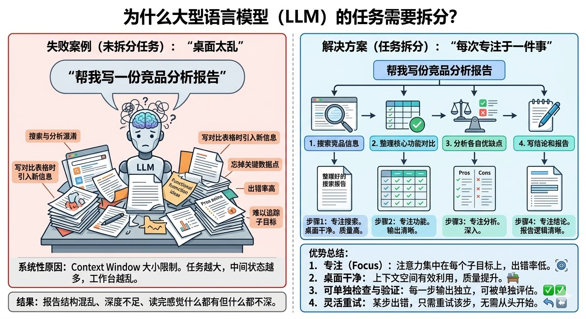
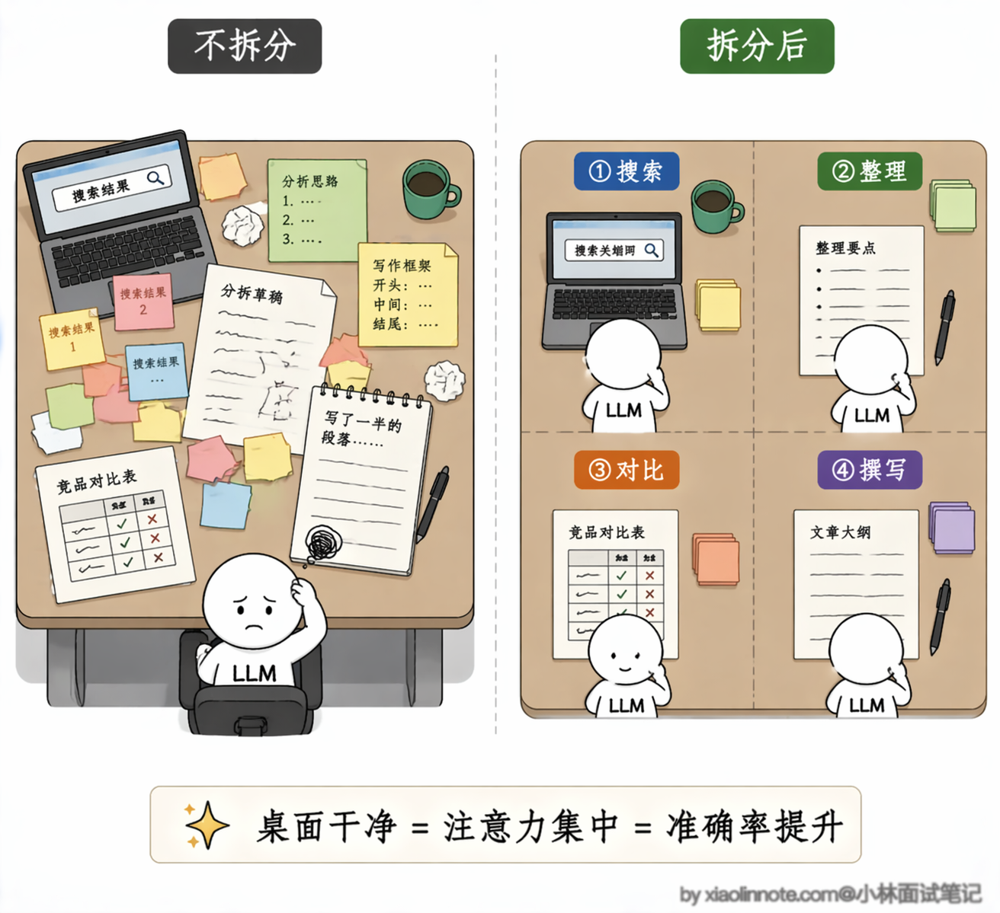
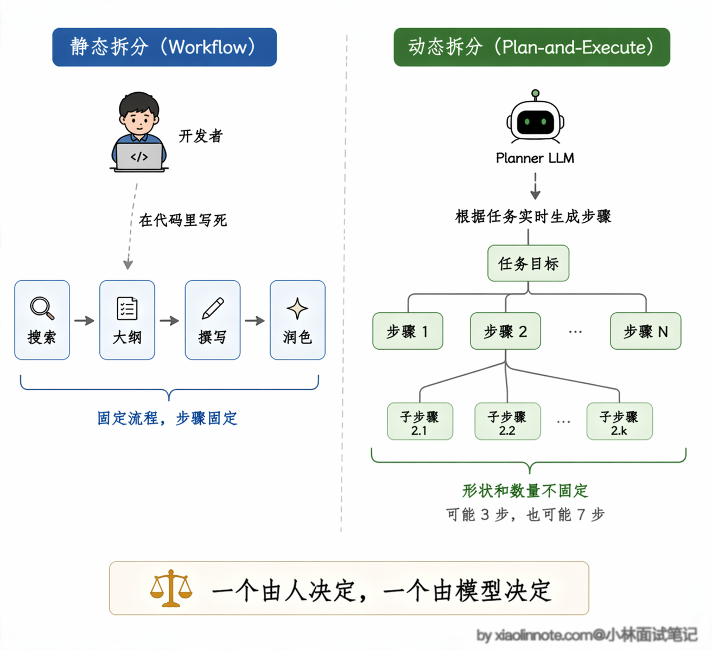
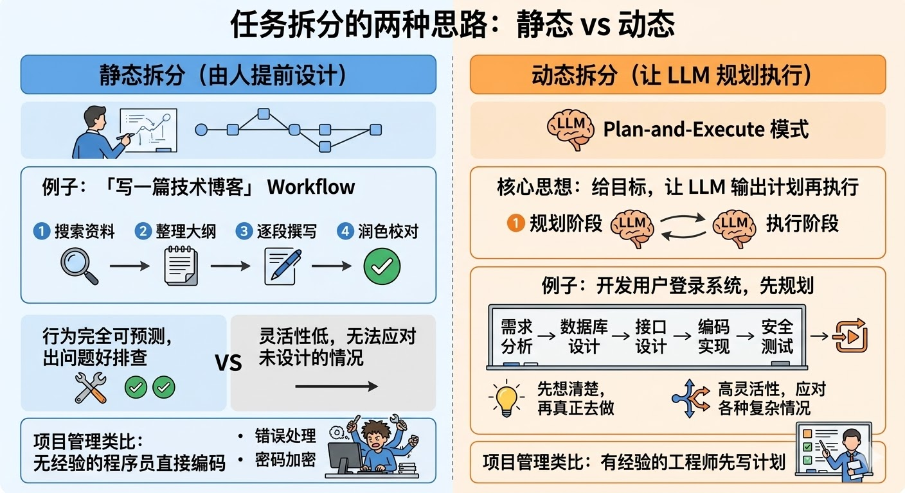
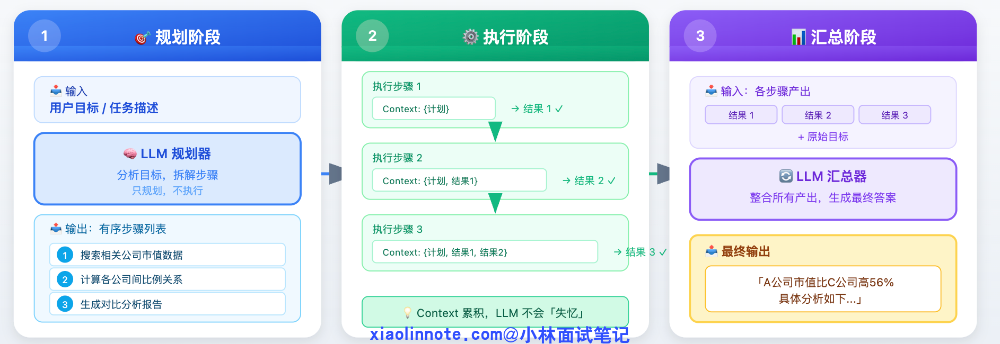
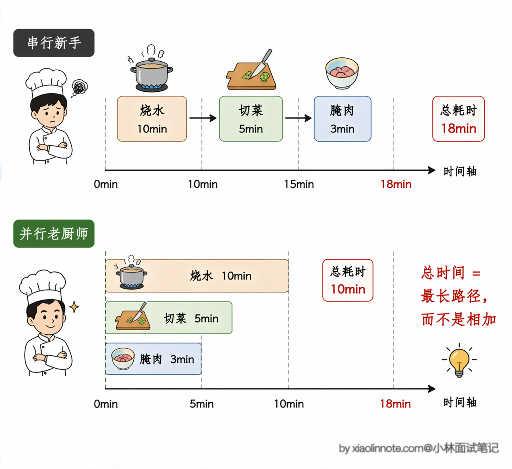
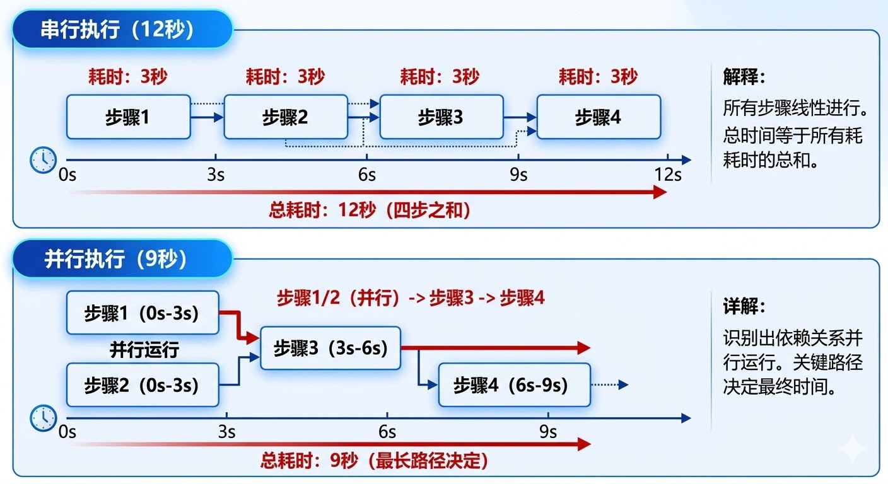
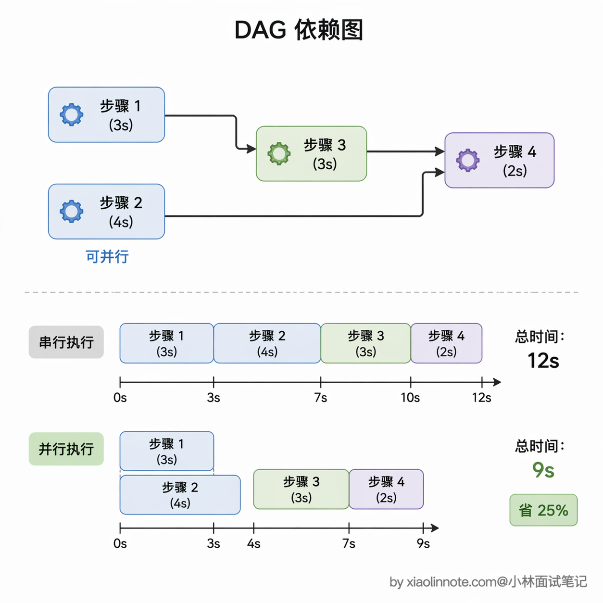
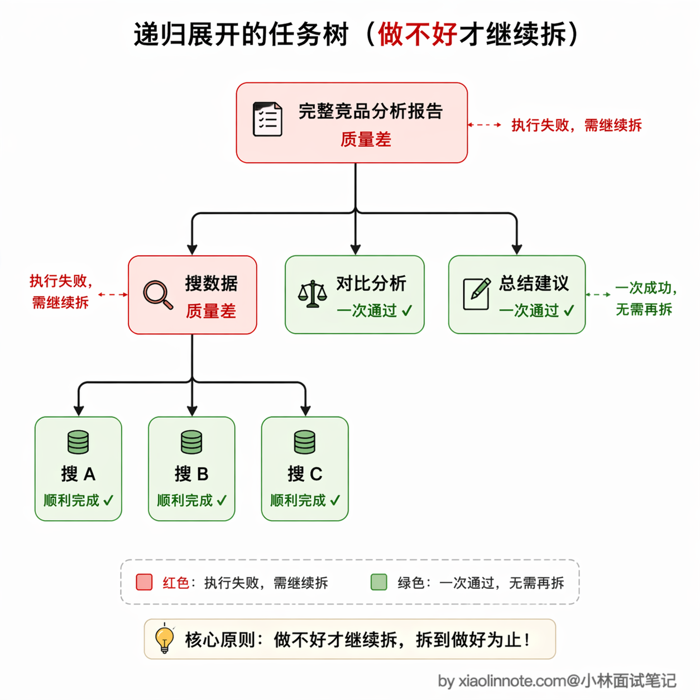
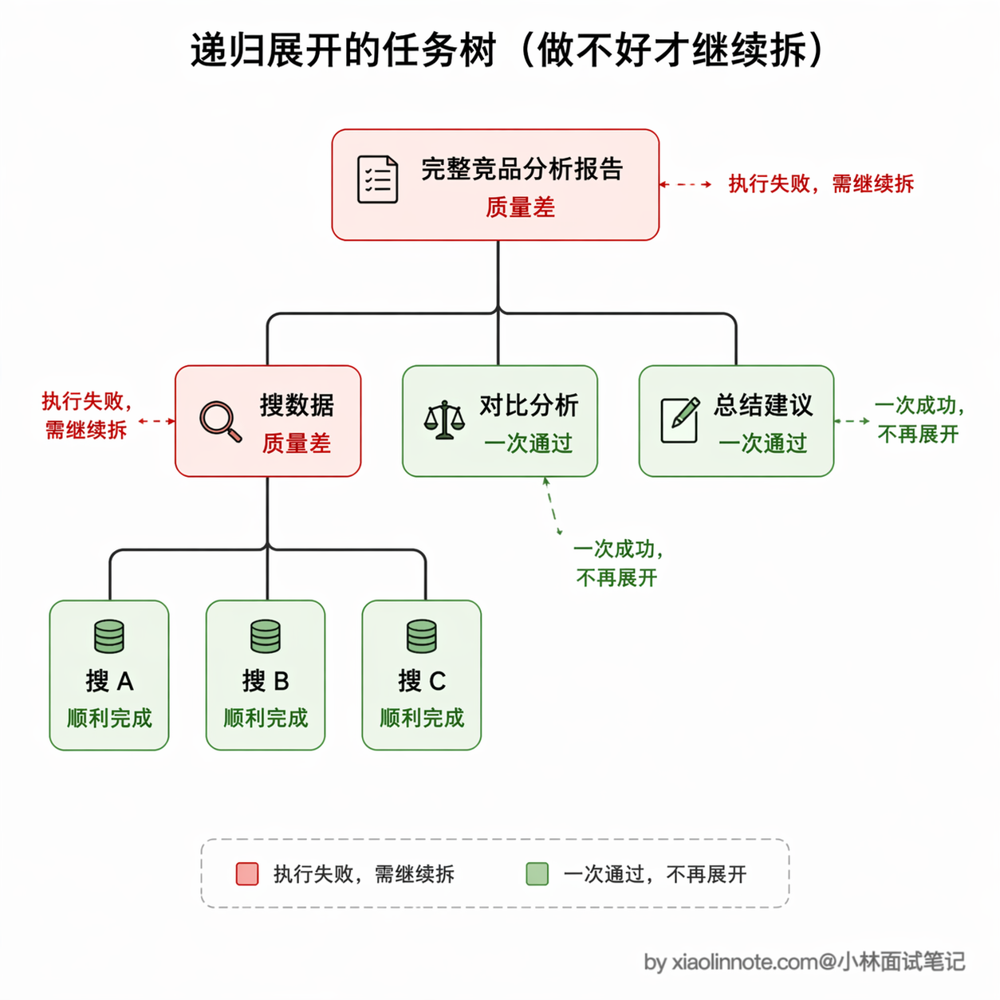

7. 复杂任务怎么做的任务拆分？为什么要拆分？效果如何提升？
👔面试官：你说说任务拆分是怎么做的，为什么要拆分，有什么实际收益？
🙋♂️我：就是把大任务切成小步骤，每步让 LLM 只做一件事，这样准确率高一些……
👔面试官：「准确率高一些」太模糊了，你能解释一下为什么拆分之后准确率会提升吗？背后是什么原因？
🙋♂️我：可能是因为……每步任务简单了，LLM 更容易做对？
👔面试官：有点方向但不够准确。核心原因是 context window 有限，任务越大中间状态越多，模型很难持续追踪子目标，容易「桌面太乱」出错。那你知道任务拆分有哪两种思路吗，各自的适用场景是什么？
🙋♂️我：一种是提前写死步骤，一种是让 LLM 自己规划步骤？
👔面试官：对，静态拆分和动态拆分。那拆完之后还有一个关键优化点，步骤之间有依赖关系，识别出哪些可以并行，端到端延迟能降很多，这你考虑过吗？
拆分粒度、并行优化、依赖分析，这三个点一起答出来，才是完整的任务拆分方案。
💡 简要回答
我理解任务拆分的原因是 LLM 一次性处理太复杂的任务很容易出错，把大任务拆成小步骤，每步聚焦一件事，准确率会明显提升。
拆分方式主要有两种：一种是静态拆分，提前把步骤写死；另一种是动态拆分，让 LLM 自己根据目标规划步骤，更灵活但也更难控制。
拆完之后步骤之间可能有依赖关系，我的经验是把能并行的步骤并发跑，端到端延迟可以降很多，有时能降 40% 到 60%。
📝 详细解析
为什么任务要拆分？
先从一个具体的失败案例说起，感受一下为什么任务拆分是必要的。
你让一个 LLM 一次性完成「帮我写一份竞品分析报告」，它需要搜索多家竞品的信息、整理核心功能对比、分析各自优缺点、写结论。听起来是一件事，但其实是四件完全不同的事混在一起。
LLM 收到这个任务，往往会出现这几种毛病：在搜索阶段就开始掺杂分析意见，在写对比表格时突然引入新的竞品信息，报告写到一半忘掉了前面整理的某个关键数据点，最后输出一篇结构混乱的文章，读下来感觉什么都有、什么都不深。

这不是偶发的问题，而是有系统性原因的。LLM 的工作台，也就是 context window，是有大小限制的，能同时处理的信息量是有上限的。
任务越大，中间状态越多，桌面就越乱：搜索结果、分析意见、写了一半的段落全部堆在一起，LLM 很难持续追踪「我现在在做哪个子目标」。就像让一个人同时记住十件事并全部做对，比让他每次只专注做一件事出错率高得多。
任务拆分要解决的，就是这个「桌面太乱」的问题。把一个大目标切成多个小步骤，每个步骤只做一件事，LLM 的全部注意力都集中在这一件事上，桌面保持干净，质量自然高。

而且还有一个额外的好处：每一个步骤都是独立的输出，可以被单独检查和验证。某一步出了问题，重试那一步就行，不需要从头跑整个任务。
任务拆分两种思路
任务拆分有两种思路，一种是你自己来拆，一种是让 LLM 来拆。
这里顺便提一下两个常被拿来类比的推理范式：CoT（思维链）是让 LLM 在一个回答内部把推理过程逐步写出来，本质上是"一次生成里的内部拆分"，不涉及多步工具调用；ToT（思维树）进一步允许模型同时探索多条推理路径再选优。这些更像"LLM 内部怎么把一个复杂问题想清楚"的方法，下面要讲的静态/动态拆分说的是"Agent 怎么把一个大任务切成多个独立执行的步骤"，两者粒度和目标不同，不要混为一谈。
静态拆分是你提前把任务流程设计好，固定成一个确定的 Workflow，每一步是什么、按什么顺序执行，全部事先写死。比如「写一篇技术博客」，固定拆成：搜索资料 -> 整理大纲 -> 逐段撰写 -> 润色校对，四步顺序执行。好处是行为完全可预测，出了问题知道是哪一步的问题，好排查；坏处是灵活性低，遇到你没设计进流程的情况就容易卡住。

动态拆分则是把「任务拆解」这件事本身也交给 LLM 来做。你给它一个目标，让它先输出一个执行计划，再按计划一步步执行，这是 Plan-and-Execute 模式的核心思想。

用项目管理来类比。一个没有经验的程序员接到任务「开发用户登录系统」，可能会直接开始写代码，边写边想「接下来要做什么」，结果很容易漏掉某个环节，比如忘了写错误处理，或者到最后才想起来要做密码加密。但一个有经验的工程师会先写项目计划：需求分析 -> 数据库设计 -> 接口设计 -> 编码实现 -> 安全测试，把整体结构想清楚了再开始动手。
Plan-and-Execute 就是给 LLM 引入这个「先规划再执行」的习惯，把「想清楚要做什么」和「真正去做」分成两个独立的阶段。
整个 Plan-and-Execute 流程分三个阶段，每个阶段的角色和职责都非常清晰。

第一阶段叫「规划」，你可以把它理解成项目启动会。把目标告诉 LLM，让它像一个经验丰富的项目经理一样，输出一份有序的步骤列表。这一步只做规划，不做任何实际执行，LLM 的全部注意力集中在「想清楚要做什么」上。比如你说「帮我做一份 AI 行业调研报告」，规划模块可能会输出这样的计划：先调研行业现状和市场规模，再分析头部公司的产品和策略，接着梳理技术趋势和发展方向，然后汇总写结论和建议，最后排版润色输出成品。每一步都有明确的目标，但不开始干活。
第二阶段叫「执行」，相当于各部门按照项目经理的分工开始干活。拿着规划好的步骤列表，逐步执行每个步骤，每一步都要把前面所有步骤的结果作为 context 传进去，LLM 始终知道整件事做到哪里了，不会「失忆」。这个阶段的关键是每一步只聚焦于自己的任务，不会像 ReAct 那样走着走着就被岔路吸引走了。
第三阶段叫「汇总」，就像项目验收会。所有步骤跑完之后，把各步骤的产出整合在一起，生成最终输出。这一步的作用不仅是拼接，还要解决各步骤之间的衔接问题，确保最终输出是一个连贯的整体，而不是几段互不相关的内容生硬地拼在一起。
动态拆分的优势是灵活性强，LLM 可以根据具体任务的特点制定最合适的计划；劣势是规划质量不稳定，规划一旦出了问题，后续所有执行步骤都建立在错误的基础上。
步骤拆好之后，还有一件重要的事：分析步骤之间的依赖关系。有些步骤必须等前一步完成才能开始，有些步骤之间没有依赖，可以同时进行。识别出可以并行的步骤，是降低总耗时的关键。
用厨师做饭来建立直觉。你要同时处理三件事：烧水、切菜、腌肉。如果傻傻地串行，等水烧开了再切菜，切完菜再腌肉，总时间是三件事之和。

但一个有经验的厨师会这样：先烧水，烧水的同时切菜腌肉，水开了三件事都好了，直接下锅。总时间由「最长的那条路径」决定，也就是烧水的时间，因为切菜和腌肉都在等水开的过程中完成了。并行执行降低的不是「每步的时间」，而是「关键路径的总时间」。
回到 Agent 的场景，假设你有步骤 1、2、3、4，其中步骤 3 依赖步骤 1 的结果，步骤 4 依赖步骤 2 和步骤 3：
import asyncio
async def execute_parallel_steps(independent_steps: list):
# asyncio.gather 让多个步骤同时开始执行，不等某一个完成再启动下一个
# 这就像厨师烧水的同时切菜，两件事并发进行
tasks = [execute_step_async(step) for step in independent_steps]
results = await asyncio.gather(*tasks) # 等所有并发步骤都完成，一起拿结果
return results
依赖图：步骤 1 和步骤 2 相互独立，可以并行
步骤 3 需要步骤 1 的结果才能开始
步骤 4 需要步骤 2 和步骤 3 都完成才能开始
步骤1 ──────────────┐
├──> 步骤3 ──┐
步骤2 ──────────────┘ ├──> 步骤4（最终输出）
└────────────────────── ┘
如果这四步全部串行，总时间是四步之和。识别出依赖关系并行执行后，关键路径变成「步骤1/2（并行）-> 步骤3 -> 步骤4」，假设每步各需要 3 秒，串行是 12 秒，并行之后是 9 秒。步骤越多、可并行的越多，节省的时间越可观，实际项目里降低 40% 到 60% 的端到端延迟是很常见的数字（前提是任务本身的依赖关系稀疏、工具 I/O 占主要耗时；如果所有步骤都强依赖上一步，并行空间基本为零，优化效果也就无从谈起）。
要让并行真正落地，前提是先把依赖关系画成一张有向无环图（DAG），每个节点是一个步骤，边表示「依赖」。没有依赖的节点就能同时跑，依赖它们的节点要等父节点完成。这一步做得对不对直接决定了并行优化的天花板。

任务不是拆得越细越好，粒度的把握很重要。拆太细有两个代价：步骤越多，LLM 调用次数越多，总 token 消耗上升；步骤太碎，每步只做一件极小的事，LLM 看不到全局，产出的各部分也容易衔接生硬。但拆太粗又回到了原来的问题：每步负责的事太多，出错概率上升，出了问题也无法定位是哪一步的责任。
实践中通常把「原子操作」作为划分单步的标准：这个步骤只做一件独立的事，边界清晰，做完有明确的输出，和其他步骤不互相依赖。
具体举例感受一下区别。「搜索竞品 A 的产品信息」是原子的，只做一件事（搜索），有明确的输入和输出，做完就完了。
「整理竞品分析」不是原子的，它包含了搜索信息、筛选关键点、格式化输出三件事，还没开始就已经有三个子任务了。
判断一个步骤是不是原子的，有一个简单方法：你能给它写一个清晰的函数签名吗？能的话，它大概是原子的；如果你发现函数里还要分好几个阶段、处理好几类情况，那大概需要再拆。
自适应拆分：做不好就继续拆
前面讲的静态拆分和动态拆分，都有一个隐含的假设：拆分在任务开始时就一次性完成了，执行过程中不会再调整拆分粒度。但实际项目中经常遇到这样的情况：你提前拆好了三步，执行到第二步时发现这一步比预想的复杂得多，LLM 一次做不好，需要再拆细一些。或者反过来，某一步其实很简单，拆得太细反而浪费了调用次数。
更好的做法是：不要在开始时就把所有步骤的粒度定死，而是在执行过程中根据每一步的实际难度动态调整。核心逻辑很简单：先让执行器尝试完成当前任务，如果做得好就继续往下走，不做多余的拆分；如果明显做不好，比如超过了最大步数还没完成，或者输出质量不达标，就把这个「做不好的任务」交给规划器，让规划器把它进一步拆成更小的子任务，然后对每个子任务重复同样的流程：先试，做不好就再拆。
用一个生活中的例子来感受。假设你让 Agent 完成「帮我做一份完整的竞品分析报告」。执行器直接尝试一口气写完，发现质量很差，数据不准、结构混乱。
于是规划器介入，把任务拆成三步：先「搜集各竞品的核心数据」，再「做功能对比分析」，最后「写总结和建议」。执行器尝试「搜集各竞品的核心数据」，发现竞品太多一次搜不完，质量还是不行。
规划器再次介入，把「搜集数据」进一步拆成「搜集竞品 A 的数据」「搜集竞品 B 的数据」「搜集竞品 C 的数据」。这一次每一步都足够简单，执行器可以顺利完成了。
整个过程就像一棵递归展开的任务树，只有真正做不好的节点才会被继续拆分，简单的节点一步到位。这个思路有一个很巧妙的特性：任务越复杂，递归拆分的层数就越深；任务越简单，可能一层都不拆。计算开销是和任务的实际难度成正比的，而不是一刀切地对所有任务都做同样深度的拆分。

执行中的 Replan 机制
拆分完成只是第一步，执行过程中还有一个经常被忽略的关键环节：计划需不需要调整？
前面讲并行优化的时候，隐含了一个前提：计划一旦定好就按部就班执行。但现实中，步骤的执行结果经常会让原来的计划变得不合理。比如你规划了「先查竞品 A 的定价，再查竞品 B 的定价，最后做对比分析」，执行第一步时发现竞品 A 已经停止运营了，那后面的对比分析就没意义了，整个计划需要重新调整。
Replan 机制就是在每个步骤执行完之后，把当前步骤的结果和剩余的计划一起交给规划模块，让它判断「基于当前的新信息，后面的计划还合理吗」。如果合理就继续执行，如果不合理就生成一份新的剩余步骤计划。这个机制保证了计划始终和实际情况同步，不会出现「死守一份过时计划」的尴尬。
代价是每步都多了一次「评估计划」的 LLM 调用，token 消耗会增加。实践中的折中做法是：不是每步都触发 Replan，而是设置触发条件，比如当某步的输出和预期差异很大时，或者当步骤执行失败时，才启动 Replan。这样既能应对意外，又不会无谓地增加消耗。
拆分结果的验证标准
拆完步骤之后，怎么判断拆得好不好？靠感觉是不行的，需要有明确的验证标准。
一个好的拆分结果应该满足三个条件。
第一个是「完备性」，也就是所有步骤加在一起，能不能覆盖原始任务的全部要求，有没有遗漏。比如用户说「帮我写一份竞品分析报告，包含市场份额、产品功能对比和定价策略三个维度」，你拆出来的步骤里必须每个维度都有对应的步骤在负责，少了任何一个都算拆分不完备。检查方法很直接：把所有步骤的描述拼在一起，和原始任务描述做逐项对照，看有没有某个要求在任何步骤里都没被提到。
第二个是「独立性」，也就是每个步骤的职责边界是不是清晰，有没有两个步骤在做同一件事，或者某个步骤的输出和另一个步骤的输出有重叠。
举个反面例子：步骤 2 是「搜索竞品 A 的产品功能」，步骤 3 是「分析竞品 A 的核心能力」，这两步的边界就很模糊，「产品功能」和「核心能力」大概率会搜到同样的内容，导致重复劳动。更好的拆法是步骤 2 只负责「搜索竞品 A 的全部信息」，步骤 3 负责「从搜索结果中提炼功能对比表」，一个负责搜集，一个负责加工，各管各的。
职责重叠不仅浪费 token，还容易导致最终汇总时出现矛盾，比如两个步骤对同一个功能给出了不一样的评价。
第三个是「可验证性」，也就是每个步骤执行完之后，能不能用一个简单的标准判断它做对了没有。这一点在实际项目中特别容易被忽视，但它直接决定了你能不能做自动重试和质量把控。
比如你拆了一个步骤叫「搜索竞品 A 的定价信息」，如果没有完成标准，执行完之后你只能人工看一眼判断做得好不好。但如果你在拆分时就定义了「输出中必须包含价格数字和计费模式（按量/包月/免费增值）」，执行完之后自动检查输出是否包含这两个要素就行了，缺了就自动触发重试。
好的做法是在拆分每个步骤时，同时写好它的「验收标准」，就像写单元测试的断言一样，步骤定义和验收标准成对出现。

🎯 面试总结
回答任务拆分这道题，要答出三个层次才完整。
第一层是「为什么拆」：LLM 的 context window 有上限，任务越大中间状态越多、越容易出错，而且拆开后每步可以独立验证和重试。
第二层是「怎么拆」：静态拆分适合流程固定的场景，直接写死步骤；动态拆分用 Plan-and-Execute 让 LLM 自己规划，灵活但规划质量不稳定。
第三层是「拆完还要做的事」：分析步骤依赖关系，把能并行的步骤并发跑，关键路径时间可以降 40% 到 60%。
最后再补一句「粒度把握很重要，以原子操作为标准，既不能太细也不能太粗」，这道题就回答得很漂亮了。
对了，AI Agent的面试题会在「公众号@小林面试笔记题」持续更新，林友们赶紧关注起来，别错过最新干货哦！